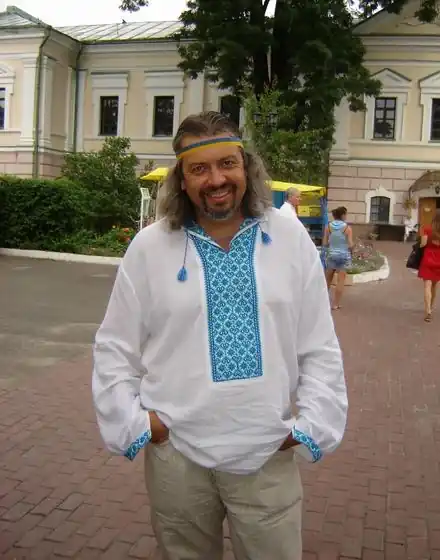

Сергій Дмитрович Пантюк народився 10 лютого 1966 в с. Сокілець Дунаєвецького району Хмельницької області. Український письменник, перекладач, редактор, журналіст, громадський діяч і видавець. Член Національної спілки журналістів України (від 1993). Член Національної спілки письменників України (від 1997), її секретар (2011—2014).
Навчався в середній школі № 2 у Кам'янці-Подільському, однак за дві чверті до завершення школи перейшов у середню школу № 15, яку закінчив у 1983. Згодом завершив філологічний факультет Кам'янець-Подільського педагогічного інституту (нині — Кам'янець-Подільський національний університет).
Служив у радянській армії (Азербайджан), працював на заводі, у школі в селі Підпилип'я Кам'янець-Подільського району вчителем української мови, німецької мови, малювання та фізкультури. Згодом — в редакціях кількох газет, пройшовши шлях від коректора до головного редактора. Мешкав і працював у Чернівцях та Хмельницькому, майже три роки — на Півночі Росії, від 2004 року — у Києві. Збірки: "Таїнство причастя" (1994), "Тінь Аріяни" (1994), "Храм характерників" (1996), "Володар вогню" (2000), "Цілунок блискавки" (2002), "Босяцький калфа" (2003), "Босяцький калфа. Вибрані поезії" (2005), "Смак Бога" (2009), "Неслухняники. Вірші для дітей" (2010), "Соло для дримби" (2012), "Мовизна" (2014), "Оченята кольору антрациту" (2015), "Поранений херувим" (2015), "Дев'яностіада. Поема-есей про поетів і поеток" (2016), "Так мовчав Заратустра. Вибрані поезії" (2017), "Про100 вірші. Емоції, стани" (2018), "Абетка грибничка" (2019). "Емоджинаріум, або Подорож у світ почуттів" (2020). Проза: 2007 — роман "Сім днів і вузол смерті". 2009 — збірка новел "Як зав'язати з бухлом і курінням" (видавництво "Зелений пес"). 2012 — роман "Війна і ми" (видавництво "Ярославів Вал", серія "Червоне і чорне", диплом "Коронації слова" у номінації "Вибір видавців") 2015 — науково-фантастична повість для дітей "Вінчі й Едісон", (видавництво "Фонтан казок") 2016 — повість для дітей "Тимко і ґелґотунчик Шкода", (видавництво "Фонтан казок"). 2020 — повість для підлітків "Швидше не буває", (видавництво "Наш формат"). 2021 — збірка новел та оповідок "Книжка в дорогу" (видавництво "Меркюрі Поділля").